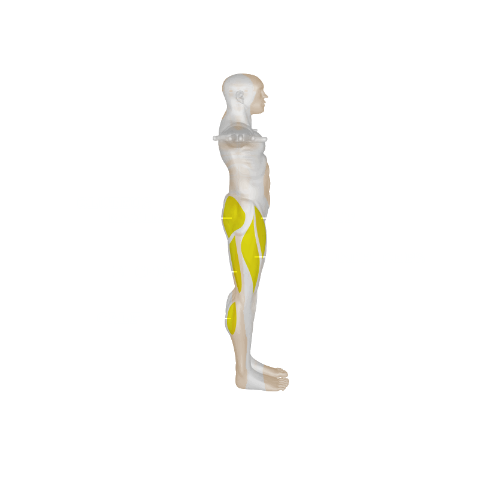

<!doctype html>
<html class="no-js" lang="">
<head>
<meta charset="utf-8">
<meta http-equiv="x-ua-compatible" content="ie=edge">
<title>The Forms of AEROBICS by - J. Tuquib</title>
<meta name="description" content="">
<meta name="viewport" content="width=device-width, initial-scale=1">

<link rel="manifest" href="site.webmanifest">
<link rel="apple-touch-icon" href="icon.png">
<!-- Place favicon.ico in the root directory -->

<link rel="stylesheet" href="css/normalize.css">
<link rel="stylesheet" href="css/fonts.css">
<link rel="stylesheet" href="css/home.css">
<script src="js/jquery.min.js"></script>
<script src="js/TimelineMax.min.js"></script>
<script src="js/TweenMax.min.js"></script>
<script src="js/SplitText.min.js"></script>
<script src="js/home.js"></script>

</head>
<body>
<div class="bod">

<div class="container">
   <div class="slides">
       <div class="slide swalk" style="background: url('img/abg-walk.png') no-repeat top center"></div>
       <div class="slide swalk" style="background: url('img/abg-shadow.png') no-repeat top center"></div>
       <div class="slide srun" style="background: url('img/abg-run.png') no-repeat top center"></div>
       <div class="slide srun" style="background: url('img/abg-shadow.png') no-repeat top center"></div>
       <div class="slide sbike" style="background: url('img/abg-bike.png') no-repeat top center"></div>
       <div class="slide sbike" style="background: url('img/abg-shadow.png') no-repeat top center"></div>
       <div class="slide sswim" style="background: url('img/abg-swim.png') no-repeat top center"></div>
       <div class="slide sswim" style="background: url('img/abg-shadow.png') no-repeat top center"></div>     
   </div> <!-- end slides -->
        <div class="title">
            <div class="tits">
                
                
                
                
            </div>
        </div><!-- end title -->

    <div style="clear"></div>
    <div class="content">
        <p id="quote"></br></br>Aerobic exercise is a form of an easy to intense physical activity. This activity give various health benefits to our body. These includes strengthening of muscle, bones, heart, lungs and also helps improve our bodies use of oxygen.<br/><br/>
        This project will show detailed information about the four common form of Aerobic exercise.
        <br/><br/>
        Walking, Jogging, Cycling and Swimming.</br></br>
        </p>
    </div><!-- end content -->

    <div style="clear"></div>
</div> <!-- end container -->

<div class="sounder">
<audio id="audi" loop >
<source src="audio/audioBG.wav"> <source src="audio/audioBG.ogg"><source src="audio/audioBG.mp3"></audio>
<audio id="shome" >
<source src="audio/soundHome.wav"> <source src="audio/soundHome.ogg"><source src="audio/soundHome.mp3"></audio>
<audio id="splay" >
<source src="audio/soundPlay.wav"> <source src="audio/soundPlay.ogg"><source src="audio/soundPlay.mp3"></audio>
<audio id="spause" >
<source src="audio/soundAhhh.wav"> <source src="audio/soundAhhh.ogg"><source src="audio/soundAhhh.mp3"></audio>
<audio id="smbutton" >
<source src="audio/soundMbutton.wav"> <source src="audio/soundMbutton.ogg"><source src="audio/soundMbutton.mp3"></audio>
<audio id="shover" >
<source src="audio/soundHover.wav"> <source src="audio/soundHover.ogg"><source src="audio/soundHover.mp3"></audio>
<audio id="sgraph" >
<source src="audio/soundGraph.wav"> <source src="audio/soundGraph.ogg"><source src="audio/soundGraph.mp3"></audio>
<audio id="slogo" >
<source src="audio/soundLogo.wav"> <source src="audio/soundLogo.ogg"><source src="audio/soundLogo.mp3"></audio>
<audio id="sgbar" >
<source src="audio/soundGbar.wav"> <source src="audio/soundGbar.ogg"><source src="audio/soundGbar.mp3"></audio>
<audio id="sbtitle" >
<source src="audio/soundBtitle.wav"> <source src="audio/soundBtitle.ogg"><source src="audio/soundBtitle.mp3"></audio>
<audio id="syes" >
<source src="audio/soundYes.wav"><source src="audio/soundYes.ogg"><source src="audio/soundYes.mp3"></audio>
<audio id="sgotit" >
<source src="audio/soundGotit.wav"><source src="audio/soundGotit.ogg"><source src="audio/soundGotit.mp3"></audio>
<audio id="smur" loop >
<source src="audio/soundMur.wav" loop><source src="audio/soundMur.ogg"><source src="audio/soundMur.mp3"></audio>


<!-- help here ---------------------------------------------------------------->
</div>

<div class="subpage">
    
    
    	<h1 id="sh1">title</h1>
        <p id="sp">text... here...</p>

    <div class="graphic" >
    <div class="graphic-bg">
     	
        
        
        
        
        
        
        
        
        
        
        
        
        
        
    </div> <!-- end graphic-bg -->
    	<ul class="graphic-col" >
        <li><p class="procon"></p></li>
        <li><div class="graph-title">
        	<div class="ttile">Kilo Joules</div>
            <div class="ttile">Cardio</div>
            <div class="ttile">Muscle Mass</div>
            <div class="ttile">Bone Density</div>
            <div class="ttile">Toning</div>
            <div class="ttile">Flexibility</div>
            <div class="ttile">Relaxation</div>
        </div>
        <div class="graph-bar">
        	<div class="gbar"></div>
            <div class="gbar"></div>
            <div class="gbar"></div>
            <div class="gbar"></div>
            <div class="gbar"></div>
            <div class="gbar"></div>
            <div class="gbar"></div>
        </div></li>
        </ul>
    </div>  <!-- end graphic -->
</div> <!-- end subpage -->  

<div class="navi">
    <ul id="btn">
        <li><p><strong>Walking</strong></br>Strengthen bones</p></li>
        <li><p><strong>Running</strong></br>Fast Burning</br>Exercise</p></li>
        <li><p><strong>Cycling</strong></br>Adventure</br>Exercise</p></li>
        <li><p><strong>Swimming</strong></br>Relaxation Exercise</p></li>
        <li><p><strong>Aerobics</strong></br>Back to</br>Main Page</p></li>
    </ul><!-- end btn -->
    
    
</div><!-- end navi --> 
<div class="footer" style="cursor:pointer;" >
	<p id="fp">CONCEPT &amp; DESIGN - <strong>J.TUQUIB</strong> - COPYRIGHT &copy 2017 :)</p>
</div><!-- end footer --> 


<div class="aboutPage" onClick="doCloseAbout()">
<div class="vidCont">
    <video class="aboutVid" autoplay loop >
        <source src="ref-about/phflag.mp4"  type='video/mp4;codecs="avc1.42E01E, mp4a.40.2"'/>
        <source src="ref-about/phflag.webm" type='video/webm;codecs="vp8, vorbis"'/>
        <source src="ref-about/phflag.ogv" type='video/ogv'/>
      Your browser does not support HTML5 video.
    </video>
</div>


<div class="aboutText">
<p class="binnerText">
<br/><br/><br/><br/><br/><br/><br/><br/><br/><br/><br/><br/><br/><br/><br/><br/><br/><br/><br/><br/>
<strong>this project...</strong>
is an illustration sampler as per requested by a client.<br/><br/>
Instead of coming up with a static illustration, I thought of creating this animated presentation to make it fun, exciting and entertaining.<br/><br/>
It took time to vector-draw the lineart graphics and retouched-enhanced the time-limited photos downloaded from the internet. I also searched audio which I patiently edited to fit the timeline of this presentation. <br/><br/>The content were written based on my researched, experienced and learned from the subject and  were not mere copy-paste from the internet.<br/><br/>
Take note that due to vast articles written and existing to date about the subject, some flow of wording or phrase may look similar to them but certainly not the intention and purely coincidental.<br/><br/><br/>

<strong>programs used...</strong>

<em>Adobe Photoshop</em> was utilized for the design layout and enhancement of time-limited photos. <br/><br/>
<em>Adobe Illustrator</em> for the vector-drawing of the icons and graphic linearts.<br/><br/>
<em>HTML 5, CSS3 and Javascript</em> for the codes and animations.
<br/><br/><br/>

<strong>the author...</strong>

<em style="letter-spacing:2px;">Joseph Tuquib</em><br/>
Art Director, Computer Tutor &amp; Web Developer by profession.<br/><br/>
Currently working freelance.<br />If you have any design requirements, be it print, digital or web, please shoot an email at <strong>joseph.tuquib@gmail.com</strong> I would love to hear from you.<br/><br/>

<strong>samutsari...</strong>
No animals were used or harmed before, during and after the development of this project.<br/><br/> 
Pixels used are 100% recyclable and radioactive ones are properly disposed of. <br/><br/> 

<strong>special mention...</strong> 
My beastfriend, <em style="letter-spacing:2px;">Jaki</em>. <br/>

<br/><br/>
<em style="letter-spacing:2px;">Have a nice day! :)</em><br/><br/><br/>

<em style="text-style:italic; text-height:60%; color:#999; display:block;">Please wait for auto-replay or <br />Click anywhere this window to resume...</em>
</p>


</div><!-- end AboutText -->
<div class="aboutPic" >
<p><strong>this photo...</strong>
<em>One early morning of summer 2017<br />
Atuwayan beach, Coron Palawan<br />Philippines </em>
</p>
</div><!-- end AboutAuthor -->

</div>

</div><!-- end bodi --> 
<script>
$(document).ready(function() {
TweenMax.killAll();
bgBlink = new TimelineMax();
smur.play();

$("#btn li:nth-child(5)").hide();
TweenMax.to(".bod", 2, {backgroundColor:"rgba(255, 255, 255, 0)", ease:Bounce.easeOut});
TweenMax.from(".container", 2, {y:-400, autoAlpha: 0, ease:Bounce.easeOut}, '+=2');
TweenMax.from(".navi", 2, {y:+400, autoAlpha: 0, ease:Bounce.easeOut}, '+=2');
homeStart();

	//---- motion --------------------------
	var sbar = $("#soundbar");
	sbar.hover(function() { shover.play(); 
		TweenMax.set(sbar, {rotation:0});
		TweenMax.from(sbar, .5, { scaleFromCenter:true, rotation:180, ease:Elastic.easeOut });  });
	
	var hbt = $("#help-btn");
	hbt.hover(function() { shover.play();
		TweenMax.set(hbt, {rotation:0});
		TweenMax.from(hbt, .5, { scaleFromCenter:true, rotation:180, ease:Elastic.easeOut });  });
		
	var abar = $("#btn-about")
	abar.hover(function() { shover.play();
		TweenMax.set(abar, {rotation:0});
		TweenMax.from(abar, .5, { scaleFromCenter:true, rotation:180, ease:Elastic.easeOut });  });
	
	var sbt = $(".start-btn");
	TweenMax.set(sbt, {rotation:0});
	sbt.hover(function() { TweenMax.to(this, .35, {x:10, rotation:"-=3.5"}); shover.play(); }, 
	function() { TweenMax.to(this, .5, {x:-10, rotation:"+=3.5"}); });
	
	var rbt = $(".resume-btn");
	rbt.hover(function() { TweenMax.to(this, .35, {x:10, rotation:"-=3.5"}); shover.play(); }, 
	function() { TweenMax.to(this, .5, {x:-10, rotation:"+=3.5"}); });
	
	var aut = $(".aboutPic");
	aut.hover(function() { TweenMax.to(this, .35, {opacity: "1"}); slogo.play(); }, 
	function() { TweenMax.to(this, .5, {opacity: ".5"}); });
	
	TweenMax.fromTo(".help", 3, {css: {opacity: "0"}}, {css:{opacity: "1"}, delay:1, onComplete:
		function() {  TweenMax.to(".start-btn", 1, {y:180, rotation:360, ease:Elastic.easeOut}); 
		sgbar.play(); } }); 
}); //End Ready

function doStart() {
	smur.pause();
	sgbar.play(); 
	TweenMax.to(".start-btn", 2, {y:-180, rotation:-360, ease:Elastic.easeOut, onComplete:
		function() {  $(".start-btn").css("display","none"); } }); 
	TweenMax.fromTo(".help", 3, {css: {opacity: "1"}}, {css:{opacity: "0"}, onComplete:
		function() { $(".help").css("display","none"); } }); 
	audi.volume = 0.5;
	setTimeout(function () { audi.play(); }, 1000);
	setTimeout(function () { shome.play(); }, 2000);
}

</script>
</body>
</html>
